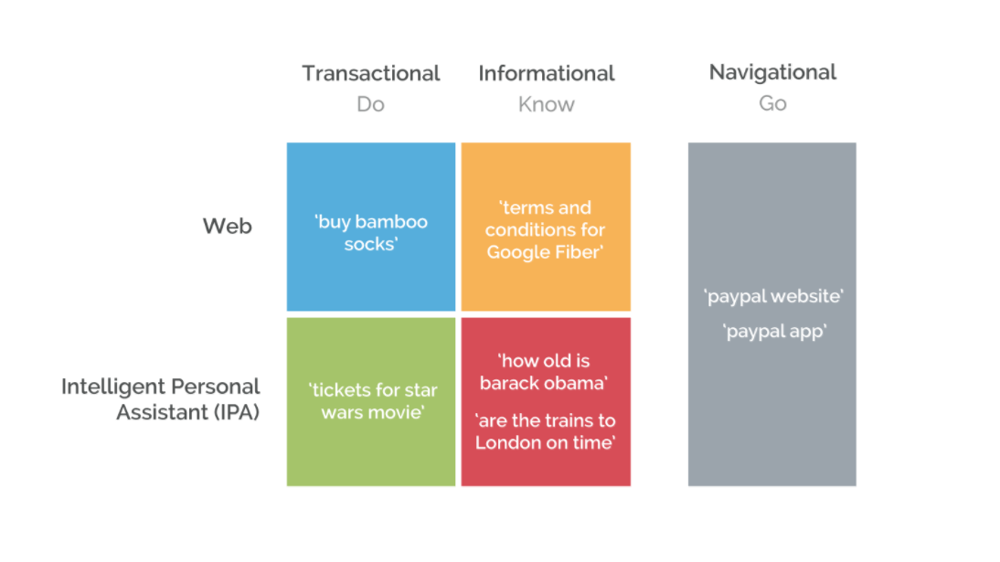

11/19/17: Classification with NLTK Notebook
Estimated time to Complete 2 hours
I thought this notebook was really interesting because I've never worked with a classifier or any topics about machine learning before. I was a bit confused about how the classifier worked to reccoignize all of the features and learned from those to classify the data appropriately.
11/19/17: SQL Notebook
Estimated time to Complete 1.5 hours
One issue that I ran into while completing this notebook. was creating the DateTimeIndex and being able to then resample the data by day. I think I had so much difficulty with this portion of the task because I hadn't imported the dateutil parser which helped filter through the data. I was surprised by my own frequently visited websites and definitely was shocked by the fact that FiveThiryEight was my second most visited site. I was not shocked, however, by how many of my searches are related to Wellesley College gmail, docs, or Sakai. If it wasnt obvious how much my school work consumes my time now it is crystal clear!
11/14/17: Selenium Searches Notebook
Estimated time to Complete: 1.5 hours
There were several challenges I ran into while completing the tasks in the notebook. One issue I had was scraping data from multiple searches and collecting the links from those pages in a set. I eventually worked through the problems and was able to compile a list of related searches to Wellesley College.
11/6/17: Chrome History for a Day
I chose to study Tuesday November 7th as a highly trafficked day in my chrome browser. While scrolling through my history to the day I chose I noticed that there is not much diversity in terms of the sites I frequently use. The most popular site visited by far is Gmail, specifically my Wellesley Email account which I constantly check. Other popular sites are Facebook (when I’m procrastinating on my school work), Sakai, and my course websites. As I use my phone for the majority of my social media indulgence, my laptop and browser are used mainly for school work. The time in which I’m on my browser is also interesting as there are very large gaps between different working periods. There are 15 interactions with the browser at 2pm and then the next interval of searches starts at 7pm which is not surprising to me as I am someone who takes breaks working on and off of my laptop.
11/6/17: Google Searches: Article 2
Estimated Time to Complete: 1 hour
Revisiting "Navigational," "Informational," & "Transactional" Searches in a Post-PageRank World by Tom Anthony
Responding to Broder’s original taxonomy of queries, Anthony proposes a newly refined classification system prepared for technology that is able to surpass the boundaries previously faced. Surveying more recent studies, it appears that 50-80% of searches are informational meaning they have a direct answer. Google has accommodated this change by creating a new query category within their own model called “Know Simple” searches that can be answered in less than two sentences. Another aspect of SEO that needed to be addressed is the emergence of Intelligent Personal Assistant Applications (IPA) like Apple’s Siri and Microsoft’s Cortana. It’s with these developments that Broder’s original model becomes outdated. The goals for SEO is still the same as it originally was to understand a user’s intent for a query but now the result can be refined very successfully. Search results are now more dynamic combining multiple tasks in one search like if a user wanted to convert currencies it would require up to date monetary values as well as computing the conversion rates. Another complication is the intertwining of Siri and second party apps to provide information like searching for movie ticket prices and being brought directly to the webpage of the closest theatre’s ticket checkout window. Anthony’s model like Broder’s may one day be outdated but for right now it can adequately handle the data presented to search engines. See his proposed taxonomy below: 
11/6/17: Google Searches: Article 1
Estimated Time to Complete: 1 hour
“A taxonomy of Web Search” by Andrei Broder
When search engines were relatively young, computer scientists focused on search engine optimization (SEO) needed a way to categorize and study the different queries and expectations of users. The commonality among all searches is the assumption that the user is seeking information. A query made by the user is sent to a larger system to select a range of documents or links that are relevant and provide the user with the (hopefully) desired result. Broder helped introduce a taxonomy that classified searches into three distinct categories: navigational, informational, and transactional. Navigational searches are used to reach the URL or web address of a site that the user knows to exist but may not remember all of the details. One example of this type of search would be to type “cvs” into the search bar and in return receive the link www.cvs.com/Pharmacy. Informational Searches are targeted to static information on a page that already exists rather than information that could be synthesized. Transactional searches perform a web related activity like shopping for a dress or trying to download a program. A study was conducted by Broder to evaluate which types of searches are more commonly used. A survey was performed on about 3000 search engine users. Some of the major takeaways from the user survey include: 68% of searches are non-navigational, 39% of searches are informational, and about 22% are navigational. This data was juxtaposed by the query results of the Log Analysis to offer a different perspective of the honestly of the users taking the survey and human bias. In the final section Broder acknowledges that the future of SEO will develop further into a more complicated system consisting of different generations of search engines developing into the giants known today like Google.